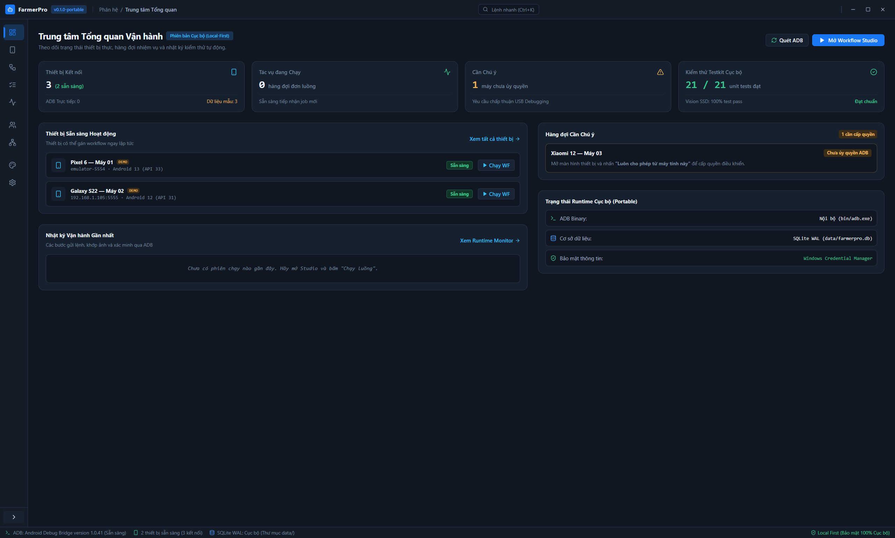
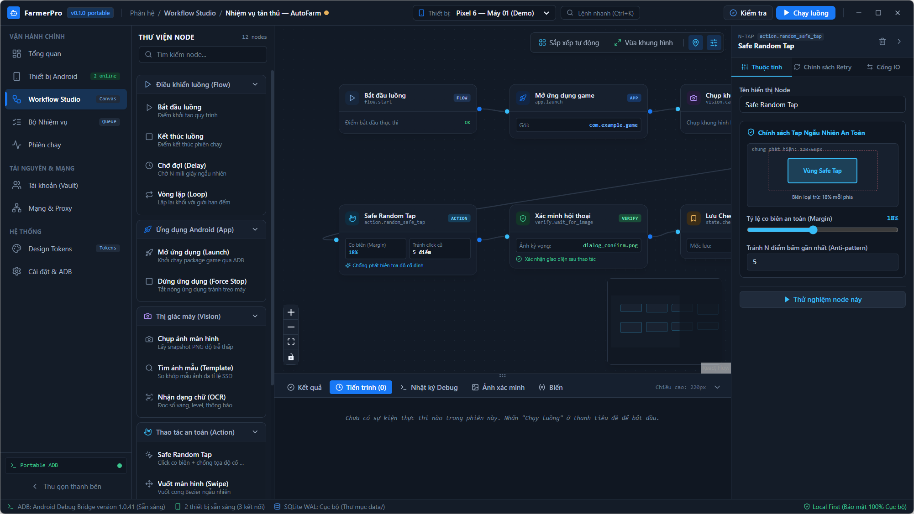
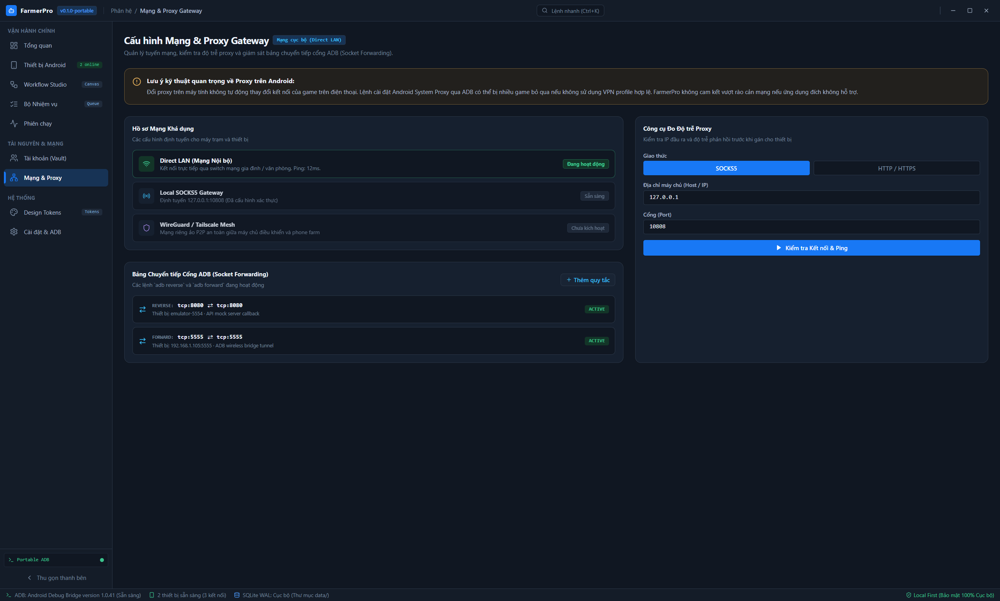

Báo cáo Nghiệm thu Giao diện & Bộ ảnh chụp UI Gallery
Đã hoàn thành toàn bộ 7 yêu cầu thẩm định chất lượng giao diện, tối ưu hóa kích thước node Workflow Studio, thống nhất titlebar và đóng gói tệp nén Portable ZIP tự chứa.
1. Chi tiết 9 Phân Hệ Giao Diện V2
Theo dõi trạng thái thiết bị thực, các phiên tự động hóa đang chạy, chỉ số kiểm thử Testkit thực tế và hàng đợi cần xử lý (Attention Queue).
- Minh bạch dữ liệu: Phân định rõ giữa ADB Trực tiếp: 0 và Dữ liệu mẫu: 3.
- Hiển thị kết quả kiểm thử Rust Testkit thực tế: 21 / 21 tests pass.
- Chuẩn hóa định danh:
Android 13 (API 33),Android 12 (API 31)kèm lối tắt "Chạy WF" nhanh.

Bảng thiết bị ADB USB/TCP, mức pin, trạng thái, góc xoay màn hình và khung xem ảnh chụp theo yêu cầu.
- Hiển thị đúng tên phiên bản thương mại:
Android 13 (API 33),Android 12 (API 31),Android 10 (API 29). - Tìm kiếm, lọc trạng thái (Tất cả, Sẵn sàng, Chưa ủy quyền), checkbox thao tác hàng loạt và sao chép nhanh serial.
- Inspector phần cứng: On-demand PNG screencap, nút "Chụp khung hình mới", CPU arm64-v8a, 420 dpi và Fencing Gen #1.

Trung tâm xây dựng quy trình tự động hóa với Canvas React Flow kéo-thả, thư viện Node phong phú, Inspector Safe Tap và Execution Dock.
- Node mở rộng kích thước lớn (~280px), độ tương phản cao, nhãn phân hệ FLOW, APP, CAPTURE, ACTION, VERIFY, STATE.
- Khử hoàn toàn lỗi dây xoắn lặp ngược: Row 1 và Row 2 đều bắt đầu từ trái sang phải.
- Bổ sung nút "Sắp xếp tự động" và "Vừa khung hình" (Fit View) trên thanh công cụ Canvas.
- Inspector trực quan hóa sơ đồ hình học Vùng Safe Tap (trừ viền co an toàn 18%), nút "Thử nghiệm node này" gọi trực tiếp Rust Core.
- Execution Dock hỗ trợ kéo thay đổi độ cao linh hoạt.

Quản lý tập nhiệm vụ (Selected Task Set), phân bổ thứ tự ưu tiên, kiểm tra điều kiện tiên quyết và kế hoạch điều phối đơn luồng trên từng thiết bị.
- Cột trái: Thư viện Nhiệm vụ Mẫu kèm điều kiện khả dụng (cấp độ 1-10, đã vào bang hội) và ước tính thời gian.
- Cột phải: Hàng đợi thực thi tuần tự của
fp-scheduler, sắp xếp ưu tiên lên/xuống, thẩm định điều kiện tự động.

Theo dõi dòng sự kiện thực thi chi tiết theo thời gian thực (Step Trace Table) với nút sao chép toàn bộ vết thực thi phục vụ phân tích lỗi.
- Bảng Step Trace thời gian thực (CommandSent, DeviceAck, VerificationPassed, CheckpointSaved) kèm mốc giờ và attempt.
- Trực quan hóa tọa độ Safe Random Tap: Bounding box và điểm chạm thực tế
(x: 242.0, y: 428.0). - Khôi phục Checkpoint: Danh sách các điểm dừng an toàn lưu trong SQLite WAL kèm nút phục hồi phiên tức thì.

Quản lý bí danh tài khoản, phân bổ thiết bị và lưu trữ tham chiếu an toàn qua Windows Credential Manager (CRED_MGR://).
- Bảo vệ tuyệt đối: Mã hóa qua Windows DPAPI, không bao giờ lưu mật khẩu hoặc token dạng plaintext vào SQLite/JSON.
- Thống kê tài nguyên farm tích lũy, phân nhóm trạng thái (Đang chạy, Sẵn sàng, Cooldown, Cần đăng nhập lại).

Quản lý hồ sơ kết nối mạng (Direct LAN, SOCKS5), kiểm tra độ trễ (ping), kèm theo cảnh báo rõ ràng về giới hạn Proxy trên Android.
- Hộp cảnh báo kỹ thuật về giới hạn Android System Proxy đối với game.
- Công cụ đo độ trễ Proxy (Ping Tool) hỗ trợ SOCKS5, HTTP, HTTPS.
- Bảng chuyển tiếp cổng ADB (Socket Forwarding) giám sát
adb forwardvàadb reverse.

Trang kiểm tra Design Tokens bảng màu chuẩn dark navy & electric blue, minh họa trạng thái component và bảng đối chiếu tiêu chuẩn nghiệm thu kỹ thuật.
- Loại bỏ huy hiệu tự chấm 10/10; thay bằng Bảng Ma trận Nghiệm thu Kỹ thuật chi tiết.
- Mô phỏng responsive 3 độ phân giải (1600x900, 1440x900, 1280x720).

Cấu hình đường dẫn ADB tự động nhận diện từ môi trường, thông tin tệp cơ sở dữ liệu SQLite chế độ WAL cục bộ và thiết lập hàng rào bảo vệ thao tác nguy hiểm.
- Cơ chế Portable thông minh: Ưu tiên nhận diện
bin\adb.exenội bộ trong gói ZIP. - Quản lý SQLite WAL cục bộ tại
data\farmerpro.dbcó nút tối ưu hóa VACUUM. - Chẩn đoán môi trường: Kiến trúc x86_64, WebView2 Evergreen, không yêu cầu quyền Admin.

2. Bảng Đối Chiếu So Sánh Trước & Sau Redesign
| Tiêu chí đánh giá | Phiên bản V1 (5.5/10) | Phiên bản V2 Redesign (≥ 9/10) | Trạng thái |
|---|---|---|---|
| Thanh tiêu đề (Titlebar) | Trùng lặp: Thanh trắng Windows + thanh tối của app | Unified Frameless: 100% thanh tối đồng nhất, nút native tích hợp, double-click maximize | ĐÃ GIẢI QUYẾT |
| Thanh điều hướng (Sidebar) | Quá tối giản, chỉ có icon 64px, không có tên phân hệ | 2 chế độ: Mở rộng 220px (đầy đủ nhãn, phân nhóm, chip số lượng) và Thu gọn 64px | ĐÃ GIẢI QUYẾT |
| Kích thước Node Studio | Quá nhỏ (~120px), canvas bỏ trống nhiều, phải zoom thủ công | Node lớn ~280px, hiển thị đầy đủ thông số cấu hình, cổng IO, tỷ lệ co an toàn | ĐÃ GIẢI QUYẾT |
| Dây nối Node (Edges) | Lượn ngược 300px cắt ngang thân node ở hàng thứ 2 | Luồng thẳng trái-sang-phải ở cả 2 hàng, đường cong Bezier sạch sẽ, không cắt đè | ĐÃ GIẢI QUYẾT |
| Thao tác Canvas | Không có nút căn chỉnh nhanh | Bổ sung nút "Sắp xếp tự động" và "Vừa khung hình" (Fit View) | ĐÃ GIẢI QUYẾT |
| Thử nghiệm Node tại chỗ | Giả lập timeout tĩnh | Nút "Thử nghiệm node này" kết nối IPC trực tiếp vào Rust Core, trả về tọa độ (x, y) thật | ĐÃ GIẢI QUYẾT |
| Định danh Android | Sai: Android 33, Android 31, Android 29 | Chuẩn hóa: Android 13 (API 33), Android 12 (API 31), Android 10 (API 29) | ĐÃ GIẢI QUYẾT |
| Minh bạch Dữ liệu | Mập mờ giữa dữ liệu thật và demo | Phân định rõ ràng: Nhãn DEMO vs LIVE, thẻ đếm số lượng kết nối thật | ĐÃ GIẢI QUYẾT |
| Bộ Nhiệm vụ (Tasks) | Danh sách đơn giản thiếu quản lý thư viện | Bố cục 2 cột: Thư viện mẫu bên trái + Hàng đợi điều phối tuần tự bên phải | ĐÃ GIẢI QUYẾT |
| Hình thức đóng gói | Phụ thuộc NSIS installer (thiếu makensis trên host) | Gói nén Portable ZIP tự chứa bin/adb.exe, zero-install, chạy ngay không cần admin | ĐÃ GIẢI QUYẾT |
3. Cấu Trúc Gói Phát Hành Portable ZIP
Tệp nén phát hành: FarmerPro-v0.1.0-win-x64-portable.zip (Dung lượng: 8,461,322 bytes)
FarmerPro/
├── FarmerPro.exe # File thực thi Windows x64 độc lập (Tauri v2 + Rust)
├── README.txt # Hướng dẫn khởi chạy không cần cài đặt
├── bin/
│ ├── adb.exe # ADB v1.0.41 nội bộ đóng gói sẵn
│ ├── AdbWinApi.dll # Thư viện Windows USB ADB
│ └── AdbWinUsbApi.dll # Thư viện WinUSB Driver
├── assets/
│ ├── templates/ # Ảnh mẫu tìm kiếm (quest_marker.png, dialog_confirm.png)
│ └── models/ # Thư mục chứa mô hình OCR / AI nhẹ
├── workflows/
│ └── beginner_quest.json # File mẫu quy trình nhiệm vụ tân thủ
├── data/ # Thư mục lưu trữ SQLite database cục bộ (farmerpro.db)
└── logs/ # Thư mục lưu nhật ký thực thi dạng văn bản